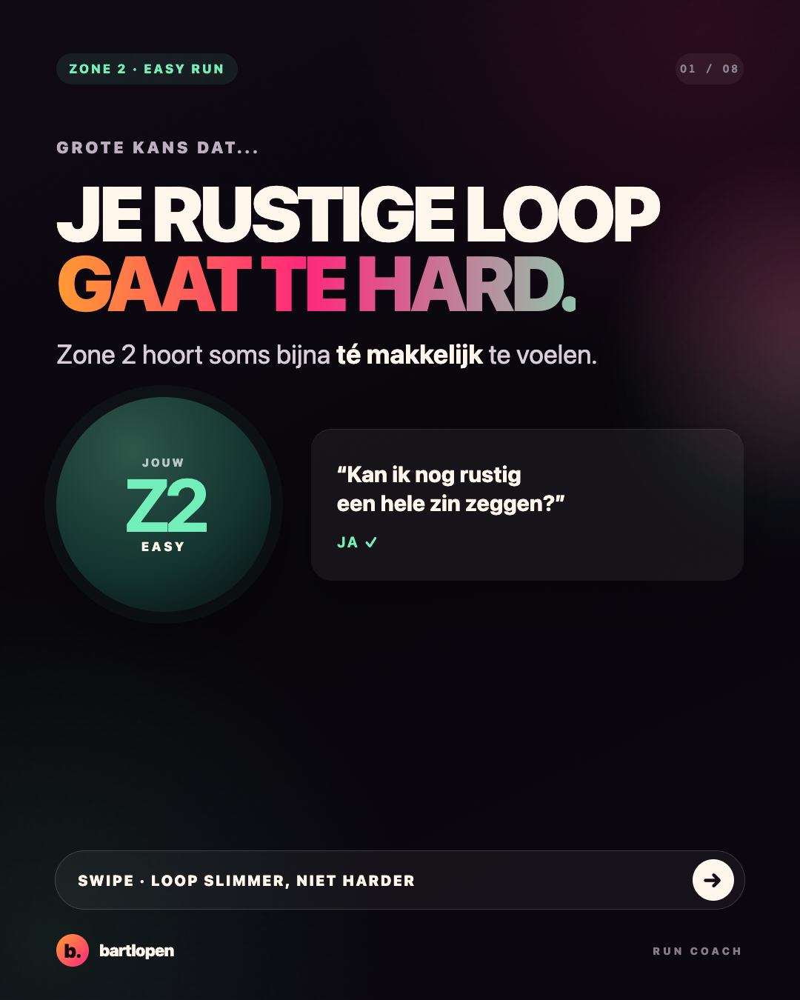
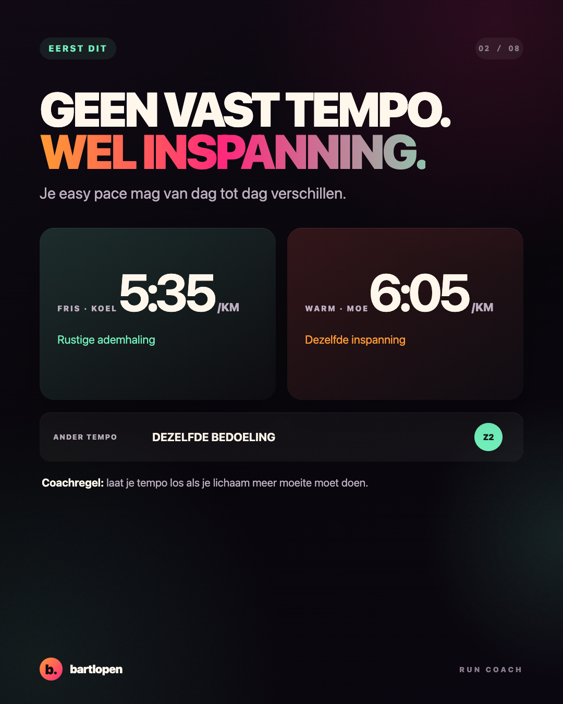
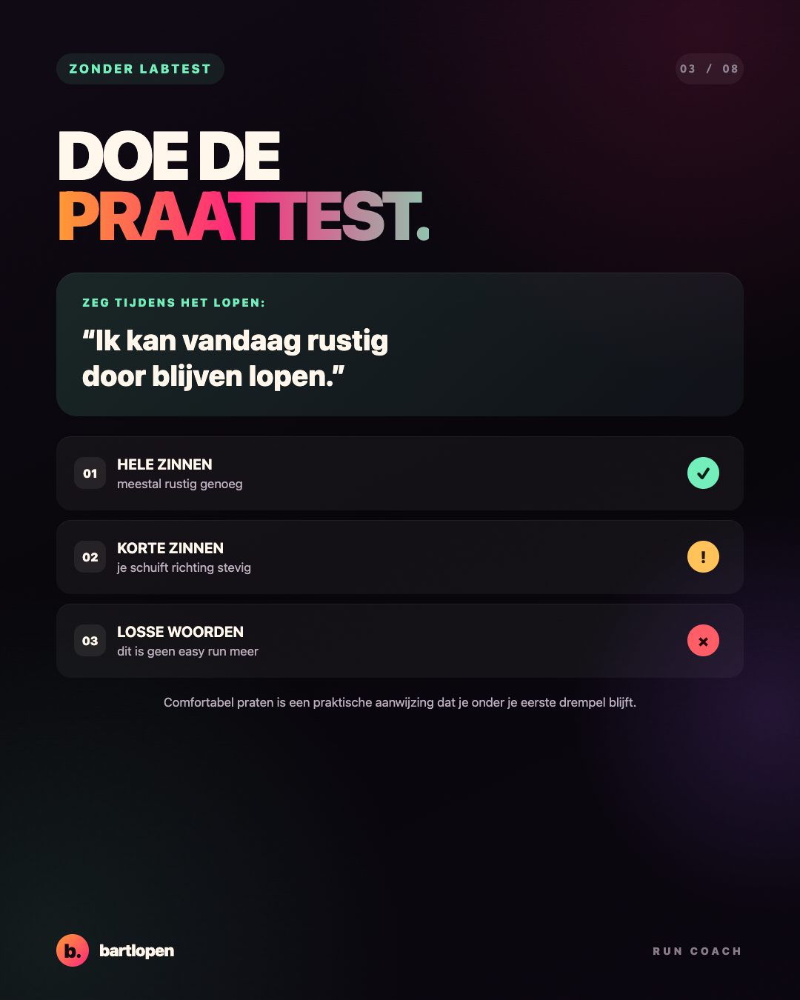
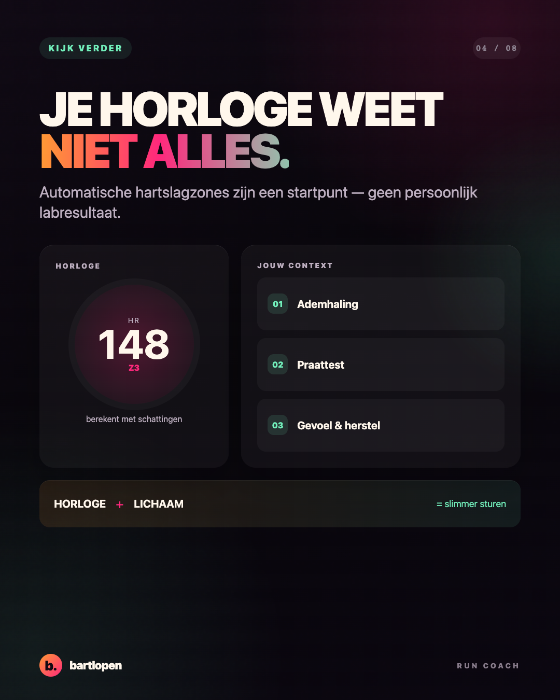
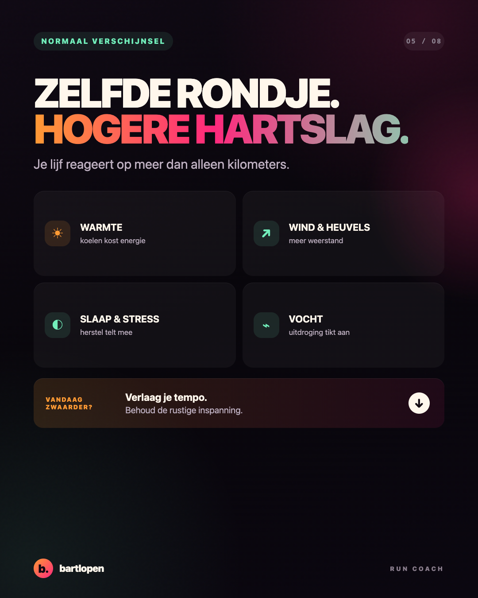
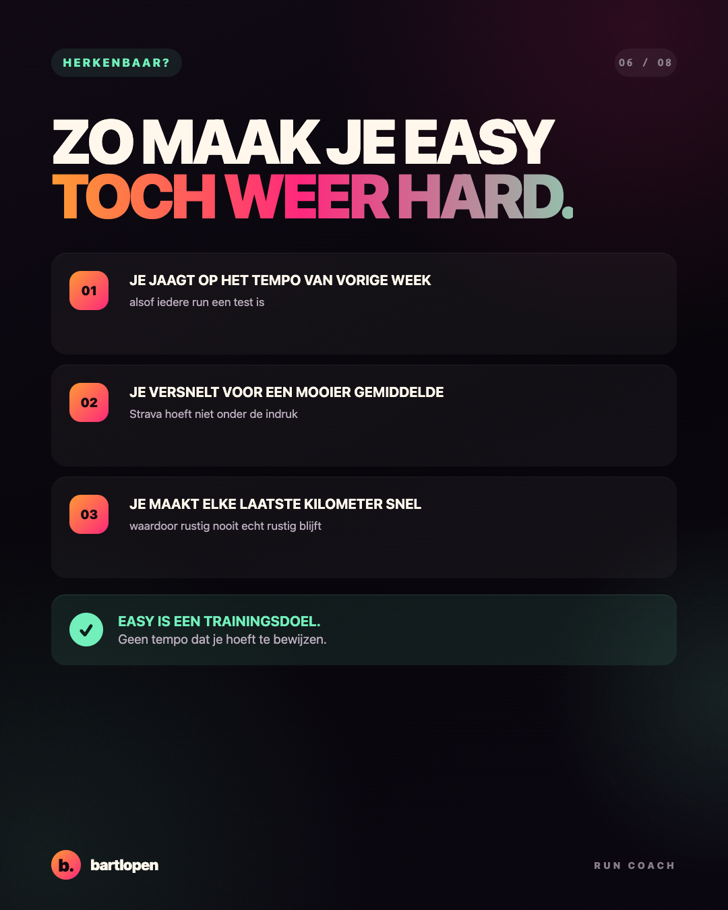
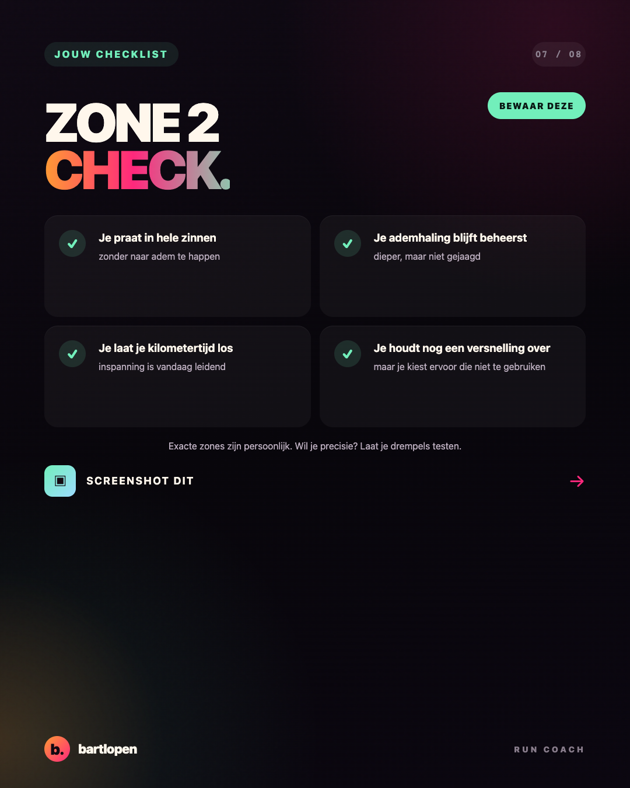
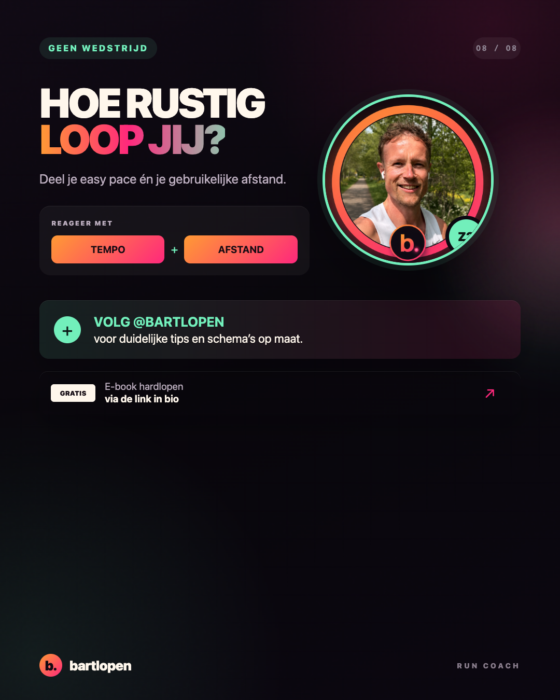

SLIDE 01 ↗Zone 2
PRO-serie
Acht originele slides over rustig lopen, hartslag en de praattest. Gebouwd in 4:5-formaat voor Instagram en TikTok Photo Mode.

SLIDE 02 ↗
SLIDE 03 ↗
SLIDE 04 ↗
SLIDE 05 ↗
SLIDE 06 ↗
SLIDE 07 ↗
SLIDE 08 ↗Caption
JE EASY RUN IS GEEN AUDITIE VOOR STRAVA 👀 Als je iedere rustige run sneller probeert te maken, worden je easy dagen ongemerkt steeds harder. Mijn simpele Zone 2-check: 🗣️ je kunt nog in hele zinnen praten 😌 je ademhaling blijft beheerst ⌚ je gebruikt je horloge als hulpmiddel, niet als baas 🔁 je houdt genoeg over om later opnieuw te trainen Warm, moe of veel wind? Laat je tempo zakken — niet je ego bepalen. Wat is jouw easy pace én gebruikelijke afstand? 👇 #hardlopen #zone2 #runningtips #hardlooptips #bartlopen